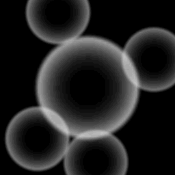

ef_ring
Built in constant for a ring effect.
Syntax :
ef_ring;
Returns: N/A.
Description
This constant is for use in the functions effect_create_above and effect_create_below,
and will create a ring effect as illustrated in the image below:

Example :
if mouse_check_button_pressed(mb_left)
{
effect_create_below(ef_ring, mouse_x, mouse_y, 1, c_aqua);
}
The above code will create a light blue ring effect below the mouse cursor when the left button is pressed.
Back : Simple Effects
Next : ef_smoke